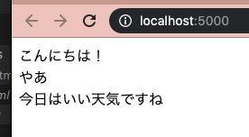

このステップでは、jQueryの使い方を学習します。
step1で作ったファイルindex.htmlを書き換えて、jQueryを読み込みましょう。
まず、jQueryのファイルをダウンロードします。
ダウンロードのしかたは、javascriptの教科書で習いましたね。
わからない方は、チャットで質問するか、ググってみてください。
ダウンロードしたjQueryのファイルをappフォルダの中に入れて、firebase/init.jsを読み込んだ後に、<script>で読み込みます。
<!-- ・・・略・・・ -->
<!-- Initialize Firebase -->
<script src="/__/firebase/init.js"></script>
<!-- jQueryファイルの読み込み-->
<script src="./jquery.min.js"></script>
</body>
</html>次は、メッセージを表示する部分を作っていきます。
jQueryを読み込んだ後に、<script>タグを書き、その中にどんどんコードを書いていきます。
まずは、投稿メッセージを覚えておくための配列を作ります。
この配列は、グローバルに宣言します。
グローバル変数は、基本的に、<script>タグのはじめのほうに定義します。
予め3つのメッセージを入れておきましょう。
<!-- Initialize Firebase -->
<script src="/__/firebase/init.js"></script>
<!-- jQueryファイルの読み込み-->
<script src="./jquery.min.js"></script>
<!-- 以下を追加-->
<script>
var messages = [
'こんにちは！',
'やあ',
'今日はいい天気ですね'
];
</script>次に、メッセージを読み込んだり、表示したりする処理をdisplay_messagesという関数としてまとめます。
関数の定義部分を書いてみましょう。
display_messagesでは、boxの中に、配列の中の各メッセージを追加表示します。
各メッセージもdiv要素として表示します。classはmessageを付与しましょう。
var messages = [
'こんにちは！',
'やあ',
'今日はいい天気ですね'
];
function display_messages() {
//データを表示する
for(var i = 0; i < messages.length; i++) {
var message = messages[i];
$('#box').append('<div class="message">' + message + '</div>');
}
}jQueryオブジェクト（DOM）を読み込んだ後に、display_messagesを実行します。
function display_messages() {
//データを表示する
for(var i = 0; i < messages.length; i++) {
var message = messages[i];
$('#box').append('<div class="message">' + message + '</div>');
}
}
$(function() {
display_messages();
});★親要素★.append("★追加したい要素★")を使います。この2点がポイントですね。
ここまで書けたら、firebase serveで実行してみましょう。
step1で実行した、firebase deployは、インターネット上に公開されるので、ある程度エラーがなくきちんと作り込んだ状態になってから実行します。
また、ブラウザで単純にindex.htmlを表示するだけだと、firebaseとの連携ができず、エラーになってしまします。（Consoleにエラーが出ます）
firebaseと連携しつつ、閉じた（ローカルな）環境でテスト実行したい場合は、firebase serveで実行します。
URLがhttp://localhost:5000 となっていますね。これは、あなたのPCの中でだけアクセスできます。
実行すると、

このように表示されます。
検証ツールで、この部分のElementsを表示すると、
<div id="box">
シンプルチャット
<div class="message">こんにちは！</div>
<div class="message">やあ</div>
<div class="message">今日はいい天気ですね</div>
</div>このようになっているはずです。
index.htmlに以下のコードを追加して、入力ボックスと投稿ボタンを追加します。
<!--以下の2行を追加-->
<input type="text" id="message" placeholder="メッセージを入力">
<button id="post">投稿</button>
<div id="box">シンプルチャット</div>入力ボックスにメッセージを入力してボタンを押したら、そのメッセージが先頭に追加されるように書き加えてみましょう。
ボタンを押したらadd_messageを実行するように作ります。
これは、$(funciton(){})の中に書きます。
add_messageでは、まずは入力ボックスに入力された内容を取得し、それが空でないことを確認します。
次に、配列の先頭に入力されたメッセージを追加し、メッセージを再表示します。
また、メッセージが追加表示されたら、入力ボックスは空にします。
お手本を見る前に、次のことを調べてみましょう。
では、お手本です。
function add_message() {
//入力欄からmessage内容を取得する
var message = $('#message').val();
if(message !== "") {
//配列の先頭にmessageを追加する
messages.unshift(message);
//再表示する
display_messages();
//入力ボックスを空にする
$('#message').val("");
}
}再表示では、すでに作ってある関数display_messages()をうまく再利用していますね。
では、firebase serveで実行してみてください。
思った動きをしていませんね。
同じメッセージが、何度も表示されています。 これを修正していきましょう。
要素を追加するこの行
これは、文字通り「追加」ですので、呼び出されるたびに、messages配列の中身全てが、
function display_messages() {
//先にboxを初期化（空に）しておきます
$('#box').html("");
//データを表示する
for(var i = 0; i < messages.length; i++) {
var message = messages[i];
$('#box').append('<div class="message">' + message + '</div>');
}
}今度はうまくいきましたね。
さて、データを表示する部分では、「配列から要素をひとつずつ取り出して、ｍessageに入れ、それを使ってboxにappendする」という作業を行いました。
この部分のコードは、
for(var i = 0; i < messages.length; i++) {
var message = messages[i];
$('#box').append('<div class="message">' + message + '</div>');
}このようになっているはずです。 もちろん、これでも正常に動作するのですが、もう少しかっこいい書き方も学んでおきましょう。
for文の部分をまるっと下のように書き換えてみましょう。
//データを表示する
messages.forEach(function(message) {
$('#box').append('<div class="message">' + message + '</div>');
});「each」は「それぞれ」というような意味を持ちます。
messagesの「それぞれの要素」を取り出して、引数の中に書いてある処理をします。
処理は、functionを使ってまとめて書きます。
教科書では、「別の場所に名前をつけて書き、それを呼び出す方法」を習いましたね。
このsetIntervalの引数には関数が入っています。 これを、「この場所に直接処理を書く」書き方に変えてみましょう。
このような書き方は匿名関数とか無名関数と言って、要するに、関数に名前をつけずにそのまま内容を書いてしまいます。
コードが短くなる反面、場合によっては読みにくくなるのですが、forEachの引数などでは、この書き方が好まれます。
setIntervalの引数で使われた関数と違って、forEachでは、forEachの引数に入る関数にも引数があり、これは、配列の要素を何という名前で受け取るかを指定します。
その引数を使って、中で処理をするのですね。
messages.forEach(function(message){ //引数にmessageと指定することで、配列の要素をmessageという名前で扱える
console.log(message); //配列の要素が出力される
});次はstep3に進みます